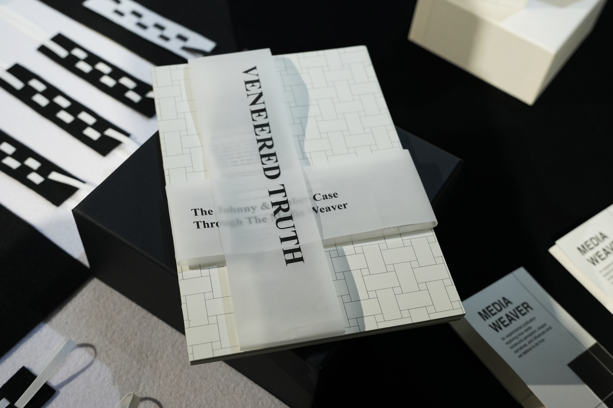
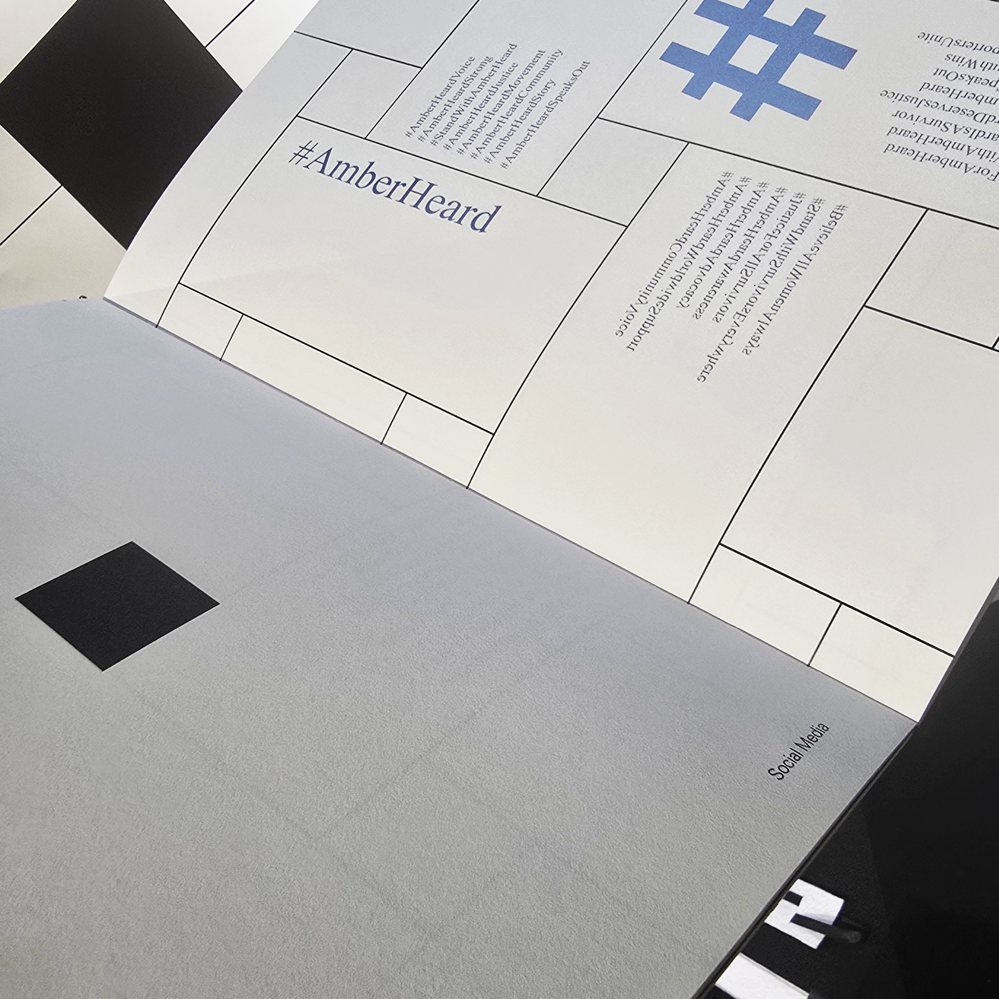
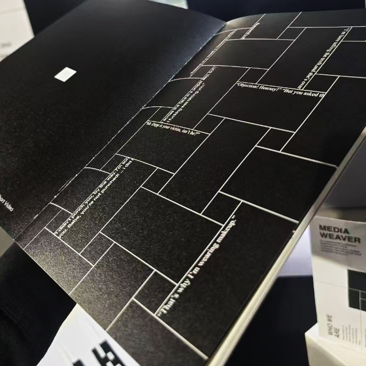
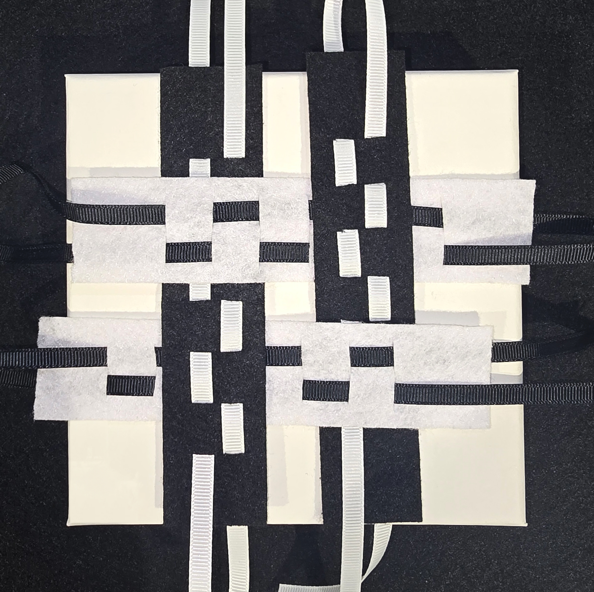

Speculative editorial publication exploring how entertainment media shapes perception and reality.

Media Weaver is a 72-page speculative publication examining the construction of entertainment narratives, media distortion, and audience perception. The project combines editorial design, speculative storytelling, and visual systems to explore how information is emotionally framed and consumed.
A fragmented grid system was developed to reflect unstable media structures and shifting perspectives. Typography, spacing, and image placement were intentionally disrupted to create moments of tension and ambiguity throughout the publication.


The visual identity draws inspiration from tabloid culture, speculative publishing, and fragmented digital interfaces. Contrasting layouts and layered compositions were used to blur the boundary between fiction and reality.
After researching the most iconic points of the case, an overarching concept for the entire book had to be established to be able to communicate the veneer of the perception of truth.
The final publication was fully printed and produced, including editorial planning, typography systems, material selection, and print coordination. The exhibition involved the making of weaved phamplets for Media Weaver and weaved bookmarks.
